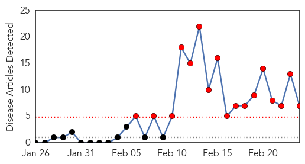

30 Day Trends
Web: 17 alerts, 0 warnings
Twitter: 6 alerts, 0 warnings
Top Articles:
- 0.999
- UN experts warn of "critical knowledge gaps" on Saudi MERS virus
- 0.999
- WHO notes stubborn MERS puzzles as Saudi cases climb
- 0.999
- Saudi Arabia reports 5 more MERS cases
- 0.993
- Philippines on alert to prevent entry of infectious diseases: official
- 0.947
- ‘Children less susceptible to MERS infection’
- 0.946
- Good hygiene practices can prevent MERS-CoV - DOH
- 0.703
- 43 Cases of MERS-CoV in Saudi Arabia are Reported to WHO
Top Tweets:
-
No tweets found for Feb 24, 2015
Web/News Articles
Tweets

Article Locations